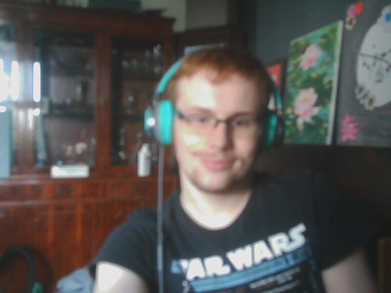

This work is licensed under a Creative Commons Attribution 4.0 International License.
Hi welcome to my website. This where you can dowload my projects, play games, learn about my projects and etc.
By using this site you are agreeing to be respectful to other people that means no cyberbullying, offensive language or any form of rude commucation online! You also agreeing that the images in this website is not allowed to be used by anyone else unless you have got my permission! If you want to copy the code then it has to be free and open source. I will respect your privacy and no data will be shared. Remember have fun at programing, gaming and using my projects :)
I am a Linux programmer that makes open source softwares for people to use. I always try my best to make my softwares the best. I am also a web devloper and I made this website on my own (isnt that awesome). I am 18 years old that is still studying in college.
I do believe that open source is great as people can learn how your project works and make their own version to share with everyone. I truly love open source as it gives freedom to people. When you make an open source software than the code can be modified and changed. Meaning if you dont like the way it looks then change it and you could also release it to people but it somtimes need to be in the same licence. I am also in love with open source as I am always using Linux and my favourite distro is Linux Mint or Fedora.
"Smiles in Linux." - User commented on ColorGameForLinux.
"He make very good open source projects. He is always improving his projects."- From Tom.
"I love his projects as I have made my own version of ColorGameForLinux." - From Toby.

I am happy as you like my projects.
This work is licensed under a Creative Commons Attribution 4.0 International License.